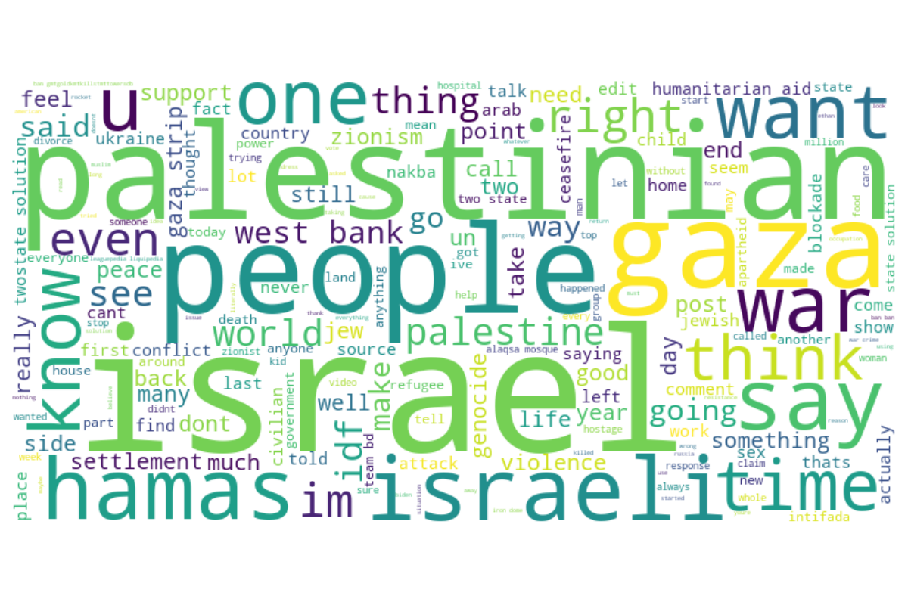

Total posts analyzed: 4997
Average text length: 350.14 characters
Average word count: 53.56 words
Computing device: CPU
The sentiment distribution among the analyzed posts:
Most frequent words in the posts:
Top topics identified in the posts:
| Topic | Top Keywords |
|---|---|
| Topic 1 | people, like, get, know, want, im, would, think, thing, dont |
| Topic 2 | israel, gaza, war, aid, hamas, israeli, say, humanitarian, solution, palestine |
| Topic 3 | palestinian, israel, israeli, state, gaza, people, would, war, one, violence |
| Topic 4 | bd, hamas, ban, team, bmtbarons, idf, match, top, gaza, hmtherald |
| Topic 5 | gaza, israeli, strip, idf, blockade, force, divorce, said, talk, ceasefire |
Most common named entities mentioned in the posts:
| Entity | Type | Count |
|---|---|---|
| Israel | GPE | 61 |
| Gaza | GPE | 38 |
| Israeli | NORP | 34 |
| Hamas | ORG | 26 |
| Palestinian | NORP | 21 |
| Palestinians | NORP | 14 |
| Zionism | NORP | 12 |
| two | CARDINAL | 10 |
| 2 | CARDINAL | 10 |
| US | GPE | 9 |
| one | CARDINAL | 9 |
| Palestine | GPE | 7 |
| Jews | NORP | 7 |
| BDS | ORG | 7 |
| UNRWA | ORG | 6 |
Relationship between post length and sentiment:
Understanding what words and phrases are influencing the sentiment classification:
Text: Israeli official says government cannot confirm babies were beheaded in Hamas attack
Prediction: negative/neutral
Key factors influencing this prediction:
Text: Why has Daryl always resisted romantic relationships?
Prediction: negative/neutral
Key factors influencing this prediction:
Text: My two state solution for after the election
Prediction: negative/neutral
Key factors influencing this prediction:
This analysis provides insights into the sentiment patterns, key topics, and important entities mentioned in Reddit posts related to the Gaza issue. The visualizations and explainable AI components help understand the factors driving sentiment in these discussions.